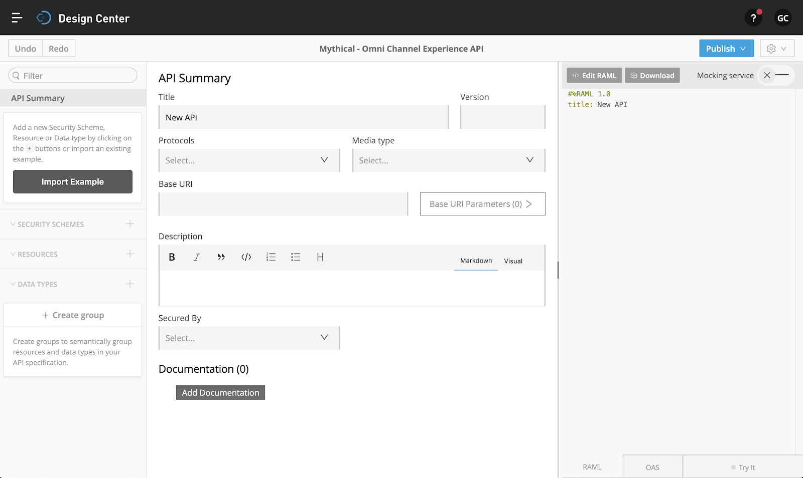
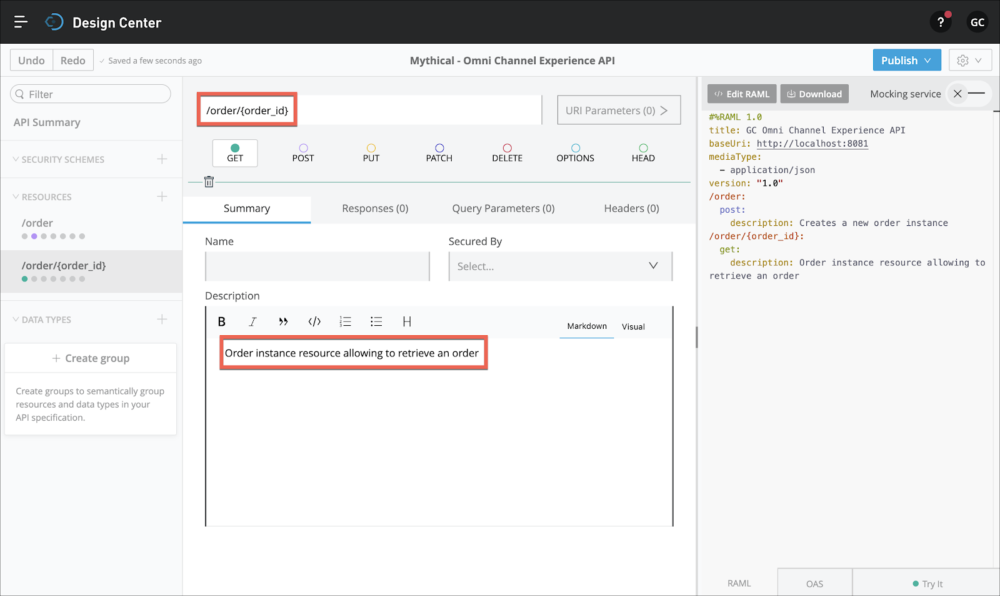
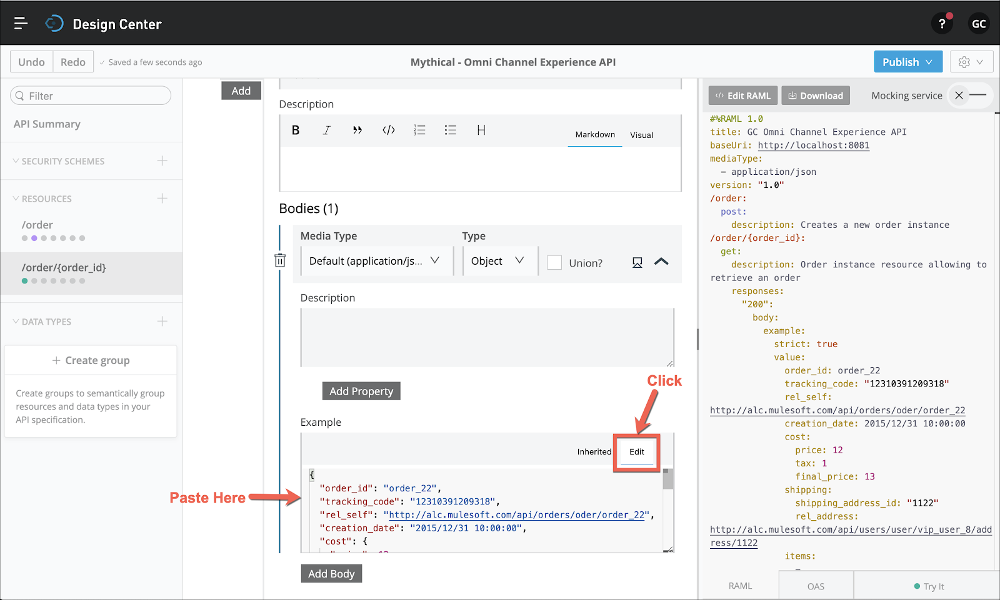
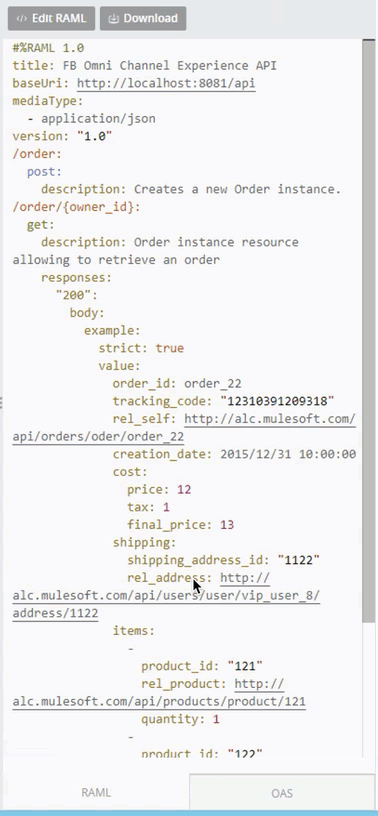

En este paso, creará una API y la diseñará utilizando Anypoint Design Center.
<nombre de usuario>: API de Omni Channel Experience.Para proporcionar la funcionalidad de manejo de pedidos para la aplicación de comercio electrónico, diseñaremos un recurso de lista en nuestra API usando RAML.
Anypoint Design Center proporcionará un editor de API visual para comenzar con un tutorial paso a paso que lo guiará a través del diseño visual de su API.

<nombre de usuario> API de Omni Channel Experience.1.0http://localhost:8081/api
. Ahora debería ver lo siguiente en el diseño de su API:/order. Seleccione POST y, en la documentación, déle una descripción: Creates a new order instance como se muestra. Observe la RAML generada a la derecha.En el paso anterior, creamos un recurso de recopilación de pedidos y un método POST para permitir que la aplicación de comercio electrónico cree una nueva instancia de pedido. ¿Qué pasaría si quisiéramos que la aplicación de comercio electrónico obtenga el estado de un solo pedido? Necesitamos crear un nuevo recurso debajo de la instancia de /order y usar el método GET.
+ aparece en el panel de recursos./order/{order_id}.Order instance resource allowing to retrieve an order 10. En "Example", haga clic en la pestaña Edit y copie y pegue el siguiente código JSON

{
"order_id": "order_22",
"tracking_code": "12310391209318",
"rel_self": "http://alc.mulesoft.com / api / orders / oder / order_22 ",
" creation_date ":" 2015/12/31 10:00:00 ",
" cost ": {
" price ": 12,
" tax ": 1,
" final_price ": 13
} ,
"envío": {
"shipping_address_id": "1122",
"rel_address": "http://alc.mulesoft.com/api/users/user/vip_user_8/address/1122"
},
"elementos": [
{
" product_id ":" 121 ",
" rel_product ":" http://alc.mulesoft.com/api/products/product/121 ",
" cantidad ": 1
},
{
" product_id ":" 122 ",
" rel_product " : "http://alc.mulesoft.com/api/products/product/122",
"cantidad": 2
}
]
}Dentro de la plataforma Anypoint puede trabajar con RAML y OAS sin problemas. Puede comprobarlo yendo al panel derecho, donde se muestra el código de especificación, y seleccionando en la parte inferior la pestaña OAS.

Haga clic en la pestaña RAML para continuar con el siguiente paso.
1.0.0.